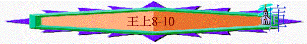

|
屬神國度的衰落 |
|||
|
二王—行神的旨意得堅固 |
二國—不專心順服終分裂 |
二先知—神能力彰顯仍剛硬 |
二結局—繼續行惡至終亡國 |
|
王上1-10 |
王上11-16 |
王上17-王下9:4 |
王下9:5-25:30 |
一、二王(王上1-10)
1.大衛王----神的旨意必成就(1:1-2:12)
2.所羅門----行神旨意得堅固(2:13-10:29)
A.行公義
B.求智慧
C.建聖殿
a.智慧合適的預備
b.按神旨意的建殿
(1)建聖殿
(2)建王宮
(3)建造銅器
c.蒙神悅納的聖所
「所羅門建造耶和華殿和王宮，並一切所願意建造的都完畢了，耶和華就二次向所羅門顯現，如先前在基遍向他顯現一樣，對他說：「你向我所禱告祈求的，我都應允了。我已將你所建的這殿分別為聖，使我的名永遠在其中；我的眼、我的心也必常在那裡。」9:1-3
~而9:3我們看到神已悅納建的殿，將殿分別出來
~而如何看到神的悅納
~聖殿被建後，神的聖所仍要甚麼？
(1)神的同在
(A)約櫃的重要
「我要在那裡與你相會，又要從法櫃施恩座上二基路伯中間，和你說我所要吩咐你傳給以色列人的一切事。」出25:22
~即或殿建得何等輝煌，但若沒神在中間，也是一間有名無實的建築
~約櫃就代表人與神相會的地方，代表神的同在
(B)約櫃的運入
「那時，所羅門將以色列的長老和各支派的首領，並以色列的族長，招聚到耶路撒冷，要把耶和華的約櫃從大衛城就是錫安運上來。以他念月，就是七月，在節前，以色列人都聚集到所羅門王那裡。」8:1-2
「祭司和利未人將耶和華的約櫃運上來，又將會幕和會幕的一切聖器具都帶上來。」8:4
~以他念月是當時的七月，現今的九月至十月間，正是住棚節
(C)選民的預備
(a)自潔
「所羅門給希蘭麥子二萬歌珥，清油二十歌珥，作他家的食物。所羅門每年都是這樣給希蘭。」代下5:11
(b)奉獻
「所羅門王和聚集到他那裡的以色列全會眾，一同在約櫃前獻牛羊為祭，多得不可勝數。」王上8:5
(D)約櫃的核心
「祭司將耶和華的約櫃抬進內殿，就是至聖所，放在兩個基路伯的翅膀底下。基路伯張著翅膀在約櫃之上，遮掩約櫃和抬櫃的槓。這槓甚長，槓頭在內殿前的聖所可以看見，在殿外卻不能看見，直到如今還在那裡。約櫃裡惟有兩塊石版，就是以色列人出埃及地後，耶和華與他們立約的時候摩西在何烈山所放的。除此以外，並無別物。」8:6-9
「有金香爐（爐：或作壇），有包金的約櫃，櫃裡有盛嗎哪的金罐和亞倫發過芽的杖，並兩塊約版；」來9:4
~來9:4提及約櫃有盛嗎哪約罐亞倫的杖，也有兩塊約板
~但王上8:9只有石板，可能在所羅門時代，其他的物已遺失了
~而神人相會的地方—約櫃，最重要是要有約，神因為祂與人主動的立約，願作他們的神，願住在他們中間，與他們同在，但人要持守這親密關係，人也要守約(即舊約的律法及十誡)
(E)同在的印證
「祭司從聖所出來的時候，有雲充滿耶和華的殿；」8:10
(2)神的垂顧
~聖所有神同在但沒有神的垂顧，也是枉然的
(A)所羅門申明—神按祂應許成就建殿的事
(a)神的隐祕
「那時所羅門說：耶和華曾說，他必住在幽暗之處。」8:12
「摩西上山，有雲彩把山遮蓋。」出24:15
~神是在人不能察覺的空間中(像幽暗之處)
~人不能見神，也不能眼制神的
(b)人的心意
「我已經建造殿宇作你的居所，為你永遠的住處。」8:13
「所羅門說：「我父大衛曾立意，要為耶和華以色列神的名建殿。」8:17
~但大衛仍有心意為神建殿，所羅門作成大衛的心意
(c)神的應許
「所羅門說：「耶和華以色列的神是應當稱頌的！因他親口向我父大衛所應許的，也親手成就了。他說：『自從我領我民以色列出埃及以來，我未曾在以色列各支派中選擇一城建造殿宇為我名的居所，但揀選大衛治理我民以色列。』」」8:15-16
「現在耶和華成就了他所應許的話，使我接續我父大衛坐以色列的國位，又為耶和華以色列神的名建造了殿。」8:20
(B)所羅門的呼求
(a)求神成就----對大衛的應許
「所羅門當著以色列會眾，站在耶和華的壇前，向天舉手說：」8:22
「耶和華以色列的神啊，你所應許你僕人我父大衛的話說：『你的子孫若謹慎自己的行為，在我面前行事像你所行的一樣，就不斷人坐以色列的國位。』現在求你應驗這話。以色列的神啊，求你成就向你僕人我父大衛所應許的話。」8:25-26
(b)求神垂顧—人向神的呼求
「神果真住在地上嗎？看哪，天和天上的天尚且不足你居住的，何況我所建的這殿呢？惟求耶和華我的神垂顧僕人的禱告祈求，俯聽僕人今日在你面前的祈禱呼籲。願你晝夜看顧這殿，就是你應許立為你名的居所；求你垂聽僕人向此處禱告的話。」8:27-29
~聖所最重要的是有神垂顧，人來到聖所祈求時，若得神垂聽是莫大福氣
((1))求神判斷
「人若得罪鄰舍，有人叫他起誓，他來到這殿在你的壇前起誓，求你在天上垂聽，判斷你的僕人：定惡人有罪，照他所行的報應在他頭上；定義人有理，照他的義賞賜他。」8:31-32
((2))求神赦免—並收回神向人的審判
((A))關乎打仗
「你的民以色列若得罪你，敗在仇敵面前，又歸向你，承認你的名，在這殿裡祈求禱告，求你在天上垂聽，赦免你民以色列的罪，使他們歸回你賜給他們列祖之地。」8:33-34
((B))關乎下雨
「你的民因得罪你，你懲罰他們，使天閉塞不下雨；他們若向此處禱告，承認你的名，離開他們的罪，求你在天上垂聽，赦免你僕人以色列民的罪，將當行的善道指教他們，且降雨在你的地，就是你賜給你民為業之地。」8:35-36
((C))關乎災禍
「求你在天上垂聽，赦免你僕人以色列民的罪，將當行的善道指教他們，且降雨在你的地，就是你賜給你民為業之地。「國中若有饑荒、瘟疫、旱風、霉爛、蝗蟲、螞蚱，或有仇敵犯境圍困城邑，無論遭遇什麼災禍疾病，你的民以色列，或是眾人，或是一人，自覺有罪（原文作災），向這殿舉手，無論祈求什麼，禱告什麼，求你在天上你的居所垂聽赦免。你是知道人心的，要照各人所行的待他們（惟有你知道世人的心），」8:37-39
((3))求神垂聽—外邦人向神的呼求
「求你在天上你的居所垂聽赦免。你是知道人心的，要照各人所行的待他們（惟有你知道世人的心），使他們在你賜給我們列祖之地上一生一世敬畏你。「論到不屬你民以色列的外邦人，為你名從遠方而來，（他們聽人論說你的大名和大能的手，並伸出來的膀臂）向這殿禱告，求你在天上你的居所垂聽，照著外邦人所祈求的而行，使天下萬民都認識你的名，敬畏你像你的民以色列一樣；又使他們知道我建造的這殿是稱為你名下的。」8:41-43
((4))求得勝利
「你的民若奉你的差遣，無論往何處去與仇敵爭戰，向耶和華所選擇的城與我為你名所建造的殿禱告，求你在天上垂聽他們的禱告祈求，使他們得勝。」8:44-45
((5))求得憐恤
「你的民若得罪你（世上沒有不犯罪的人），你向他們發怒，將他們交給仇敵擄到仇敵之地，或遠或近，他們若在擄到之地想起罪來，回心轉意，懇求你說：『我們有罪了，我們悖逆了，我們作惡了』；他們若在擄到之地盡心盡性歸服你，又向自己的地，就是你賜給他們列祖之地和你所選擇的城，並我為你名所建造的殿禱告，」8:46-48
「求你在天上你的居所垂聽他們的禱告祈求，為他們伸冤；饒恕得罪你的民，赦免他們的一切過犯，使他們在擄他們的人面前蒙憐恤。」8:49-50
「但以理知道這禁令蓋了玉璽，就到自己家裡（他樓上的窗戶開向耶路撒冷），一日三次，雙膝跪在他神面前，禱告感謝，與素常一樣。」但6:10
「瑪代族亞哈隨魯的兒子大利烏立為迦勒底國的王元年，就是他在位第一年，我但以理從書上得知耶和華的話臨到先知耶利米，論耶路撒冷荒涼的年數，七十年為滿。我便禁食，披麻蒙灰，定意向主神祈禱懇求。」但9:1-3
「你當知道，當明白，從出令重新建造耶路撒冷，直到有受膏君的時候，必有七個七和六十二個七。正在艱難的時候，耶路撒冷城連街帶濠都必重新建造。」但9:25
~所羅門的祈求充滿遠景，他知道選民日後可能因犯罪而被擄，若在被擄的環逆中沒有聖殿，但人若向聖殿的呼求認真，求神垂顧
~結果在歷史中，有一位人物名但以理，他曾在被擄地向耶路撒冷呼求神，結果神垂聽他的祈禱，使他們終被擄歸回。
(C)所羅門的祝願
「所羅門在耶和華的壇前屈膝跪著，向天舉手，在耶和華面前禱告祈求已畢，就起來，站著，大聲為以色列全會眾祝福，說：」王上
8:54-55
(a)願神同在
「願耶和華我們的神與我們同在，像與我們列祖同在一樣，不撇下我們，不丟棄我們，」王上
8:57
(b)願神垂念
「我在耶和華面前祈求的這些話，願耶和華我們的神晝夜垂念，每日為他僕人與他民以色列伸冤，」8:59
(c)願百姓遵行神的誡命
「所以你們當向耶和華我們的神存誠實的心，遵行他的律例，謹守他的誡命，至終如今日一樣。」8:61
(D)眾百姓的奉獻
(a)極多的參與
「所羅門向耶和華獻平安祭，用牛二萬二千，羊十二萬。這樣，王和以色列眾民為耶和華的殿行奉獻之禮。當日，王因耶和華殿前的銅壇太小，容不下燔祭、素祭，和平安祭牲的脂油，便將耶和華殿前院子當中分別為聖，在那裡獻燔祭、素祭，和平安祭牲的脂油。」8:63-64
~奉獻的祭牲之多，令銅壇也容不上油，他們就將殿前院子(不能是指內院入面的空地)，分別出來，作為獻祭之用。
(b)歡樂的聚集
「那時，所羅門和以色列眾人，就是從哈馬口直到埃及小河所有的以色列人，都聚集成為大會，在耶和華我們的神面前守節七日又七日，共十四日。第八日，王遣散眾民；他們都為王祝福。因見耶和華向他僕人大衛和他民以色列所施的一切恩惠，就都心中喜樂，各歸各家去了。」8:65-66
(E)耶和華的應允
「所羅門建造耶和華殿和王宮，並一切所願意建造的都完畢了，耶和華就二次向所羅門顯現，如先前在基遍向他顯現一樣，」9:1-2
(a)應允的內容
「對他說：「你向我所禱告祈求的，我都應允了。我已將你所建的這殿分別為聖，使我的名永遠在其中；我的眼、我的心也必常在那裡。」9:3
~聖殿已得神分別及垂顧了，神的眼及神的心也常在殿中
(b)應允的條件
「你若效法你父大衛，存誠實正直的心行在我面前，遵行我一切所吩咐你的，謹守我的律例典章，我就必堅固你的國位在以色列中，直到永遠，正如我應許你父大衛說：『你的子孫必不斷人坐以色列的國位。』倘若你們和你們的子孫轉去不跟從我，不守我指示你們的誡命律例，去事奉敬拜別神，我就必將以色列人從我賜給他們的地上剪除，並且我為己名所分別為聖的殿也必捨棄不顧，使以色列人在萬民中作笑談，被譏誚。這殿雖然甚高，將來經過的人必驚訝、嗤笑，說：『耶和華為何向這地和這殿如此行呢？』」9:4-8
~人必須遵守神的話，否則神也可以捨棄聖殿
d.得神賜神的君王
(1)有宮殿
「所羅門建造耶和華殿和王宮，這兩所二十年纔完畢了。推羅王希蘭曾照所羅門所要的，資助他香柏木、松木，和金子；所羅門王就把加利利的二十座城給了希蘭。希蘭從推羅出來，察看所羅門給他的城邑，就不喜悅，說：「我兄啊，你給我的是甚麼城邑呢？」他就給這城邑之地起名叫迦步勒，直到今日。」9:10-13
「以後所羅門重新修築希蘭送給他的那些城邑，使以色列人住在那裡。」代下
8:2
~所羅門用二十座城來得希蘭王的材料
– 香栢木、松木、金子作殿與王宮
~但希蘭王似乎不滿意所羅門給他的城邑，所以城邑迦步勒，與希伯來文的「如何無物」的字音相似
~後來希蘭王似乎也將城邑交回所羅門
(2)有建設
(A)有工人
「所羅門王挑取服苦的人，是為建造耶和華的殿、自己的宮、米羅、耶路撒冷的城牆、夏瑣、米吉多，並基色。」9:15
「至於國中所剩下不屬以色列人的亞摩利人、赫人、比利洗人、希未人、耶布斯人，就是以色列人不能滅盡的，所羅門挑取他們的後裔作服苦的奴僕，直到今日。」9:20-21
(B)有督工
「所羅門有五百五十督工的，監管工人。」9:23
(C)有建設
「所羅門王挑取服苦的人，是為建造耶和華的殿、自己的宮、米羅、耶路撒冷的城牆、夏瑣、米吉多，並基色。」9:15
「先前埃及王法老上來攻取基色，用火焚燒，殺了城內居住的迦南人，將城賜給他女兒所羅門的妻作妝奩。所羅門建造基色、下伯和崙、巴拉，並國中曠野裡的達莫，又建造所有的積貨城，並屯車和馬兵的城，與耶路撒冷、利巴嫩，以及自己治理的全國中所願建造的。」9:16-19
~「米羅」可能指在斜坡上所築之平台
~「夏瑣、米吉多、並基色」是位於地勢險要、具戰略地位的防守城
(3)可奉獻
「所羅門每年三次在他為耶和華所築的壇上獻燔祭和平安祭，又在耶和華面前的壇上燒香。這樣，他建造殿的工程完畢了。」9:25
(4)有航業
「所羅門王在以東地紅海邊，靠近以祿的以旬迦別製造船隻。希蘭差遣他的僕人，就是熟悉泛海的船家，與所羅門的僕人一同坐船航海。他們到了俄斐，從那裡得了四百二十他連得金子，運到所羅門王那裡。」9:26-28
~所羅門與腓尼基人去作發展航海業
~以可迦別是位於紅海亞卡巴灣的海港
(5)有智慧及豐富
「示巴女王聽見所羅門因耶和華之名所得的名聲，就來要用難解的話試問所羅門。跟隨他到耶路撒冷的人甚多，又有駱駝馱著香料、寶石，和許多金子。他來見了所羅門王，就把心裡所有的對所羅門都說出來。所羅門王將他所問的都答上了，沒有一句不明白、不能答的。示巴女王見所羅門大有智慧，和他所建造的宮室，」10:1-4
「對王說：「我在本國裡所聽見論到你的事和你的智慧實在是真的！」10:6
~示巴位於阿拉伯南部，居民以財富及智慧出名，但當示巴女王見到所羅門的豐富及智慧，也詑異得神不守舍
(6)有財富
(A)壇香木、寶石
「（希蘭的船隻從俄斐運了金子來，又從俄斐運了許多檀香木（或作：烏木；下同）和寶石來。王用檀香木為耶和華殿和王宮作欄杆，又為歌唱的人作琴瑟。以後再沒有這樣的檀香木進國來，也沒有人看見過，直到如今。）」10:11-12
(B)金子
「所羅門每年所得的金子共有六百六十六他連得。另外還有商人和雜族（雜族在歷代下九章十四節是亞拉伯）的諸王，與國中的省長所進的金子。」10:14-15
~一他連得等於40公斤
(a)用金子作盾牌
「所羅門王用錘出來的金子打成擋牌二百面，每面用金子六百舍客勒；又用錘出來的金子打成盾牌三百面，每面用金子三彌那，都放在利巴嫩林宮裡。」10:16-17
~「擋裨」遮全身的盾裨，盾牌體積較小
(b)用金子作寶座
「王用象牙製造一個寶座，用精金包裹。寶座有六層臺階，座的後背是圓的，兩旁有扶手，靠近扶手有兩個獅子站立。」10:18-19
(c)用金子作器冊
「所羅門王一切的飲器都是金子的。利巴嫩林宮裡的一切器皿都是精金的。所羅門年間，銀子算不了甚麼。」10:21
(C)有貢物
「所羅門王的財寶與智慧勝過天下的列王。普天下的王都求見所羅門，要聽神賜給他智慧的話。他們各帶貢物，就是金器、銀器、衣服、軍械、香料、騾馬，每年有一定之例。」10:23-25
(D)有軍備
「所羅門聚集戰車馬兵，有戰車一千四百輛，馬兵一萬二千名，安置在屯車的城邑和耶路撒冷，就是王那裡。王在耶路撒冷使銀子多如石頭，香柏木多如高原的桑樹。所羅門的馬是從埃及帶來的，是王的商人一群一群按著定價買來的。從埃及買來的車，每輛價銀六百舍客勒，馬每匹一百五十舍客勒。赫人諸王和亞蘭諸王所買的車馬，也是按這價值經他們手買來的。」10:26-29
~當所羅門行神旨意，求智慧及建聖殿，神大大賜福給他們
「羅門王的財寶與智慧勝過天下的列王。」10:23